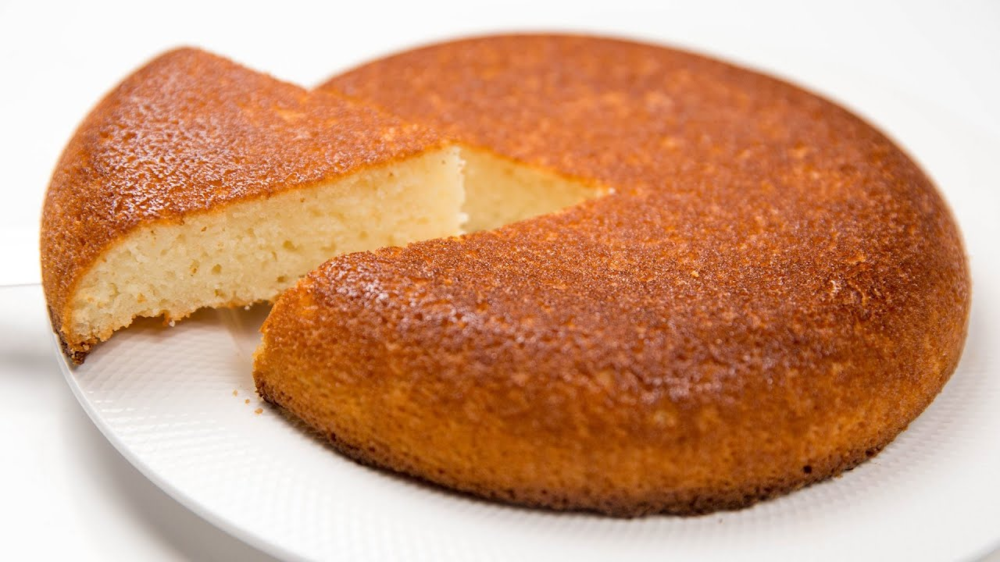

The Semolina cake (aka Mannik)

Required ingredients:
- 2 eggs
- One glass of sugar
- One glass of kefir or yogurt
- One glass of semolina
- 200 g butter
- 1 tbsp baking powder
Cooking steps:
-
Mix the eggs with sugar in the bowl.
-
Mix kefir (or yogurt) with semolina in a separate bowl, let it brew for 20 minutes.
-
Melt the butter.
-
Mix all ingredients, then add the baking powder and mix once more.
-
Transer the mixture into the form, bake it at 180 degrees Celsius in the oven for 40 minutes.
-
Let the dish cool completely.
Home